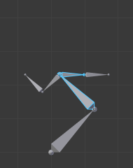

Редагування -- Editing¶

Панель «Інструменти Пози» -- Pose Tools.
In Pose Mode, bones behave like objects. So the transform actions (grab/rotate/scale, etc.) are very similar to the same ones in Object mode (all available ones are regrouped in the submenu). However, there are some important specificities:
- Bones' relationships are crucial (see Приріднення -- Parenting).
- The "transform center" of a given bone (i.e. its default pivot point, when it is the only selected one) is its root. Note by the way that some pivot point options seem to not work properly. In fact, except for the 3D Cursor one, all others appear to always use the median point of the selection (and not e.g. the active bone's root when Active Object is selected, etc.).
Базове позування -- Basic Posing¶
As previously noted, bones' transformations are performed based on the Rest Position of the armature, which is its state as defined in Edit Mode. This means that in rest position, in Pose Mode, each bone has a scale of 1.0, and null rotation and position (as you can see it in the Transform panel, in the 3D Views).

An example of locally-Y-axis locked rotation, with two bones selected.
Moreover, the local space for these actions is the bone's own one (visible when you enable the Axes option of the Armature panel). This is especially important when using axis locking, for example, there is no specific "bone roll" tool in Pose Mode, as you can rotate around the bone's main axis just by locking on the local Y axis R Y Y... This also works with several bones selected; each one is locked to its own local axis!
When you pose your armature, you are supposed to have one or more objects skinned on it! And obviously, when you transform a bone in Pose Mode, its related objects or object's shape is moved/deformed accordingly, in real-time. Unfortunately, if you have a complex rig set-up and/or a heavy skin object, this might produce lag, and make interactive editing very painful. If you experience such troubles, try enabling the Delay Deform button of the Armature panel the skin objects will only be updated once you validate the transform operation.
Авто ІК -- Auto IK¶
Орієнтир -- Reference
| Mode: | Pose Mode |
|---|---|
| Panel: |
Опція автоматичної інверсної кінематики ІК на Панелі Інструментів -- Tool Shelf вмикає тимчасово примус ІК (інверсна кінематика) при позуванні (трансформуванні) кісток. Ланцюжок діє у напрямку від верхівки виділеної кістки до кореня найвищої предківської кістки. Зауважте, що це режим немає опцій, і працює тільки, застосовуючи результатне трансформування до кісток у ланцюгу.
Зчистити Трансформації -- Clear Transform¶
Орієнтир -- Reference
| Mode: | Pose Mode |
|---|---|
| Menu: | |
| Hotkey: | Alt-G, Alt-R, Alt-S |
Після того, як ви трансформували деякі кістки, якщо ви хочете повернутися до їх позиції спокою, просто зчистіть їх трансформації.
- Локація -- Location, Обертання -- Rotation, Масштаб -- Scale Alt-G, Alt-R, Alt-S
- Зчищає трансформації кожну з цих окремо.
- Усе -- All
- Зчищає усі наявні трансформації за раз.
- Скинути Неключоване -- Reset Unkeyed
Зчищає трансформації, як не були ключовані (не зафіксовані ключкадром), до попереднього ключкадрованого стану. Цей оператор також доступний у меню «Спеціальне > Зчистити Користувацькі Трансформації» -- .
- Лише Виділене -- Only Selected
- Оперує тільки на виділених (або при вимкненні усіх) кістках.
Зауважте, що при візуалізації «Оболонка» -- Envelope, Alt-S не зчищає масштаб, а скоріше масштабує «Відстань» -- Distance області впливу виділених кісток (що також доступно через команду меню «Поза > Масштабувати Відстань Оболонки» -- , яка ефективна тільки при візуалізації Envelope, навіть хоча є завжди доступною...).
Застосування -- Apply¶
Орієнтир -- Reference
| Mode: | Pose Mode |
|---|---|
| Menu: | |
| Hotkey: | Ctrl-A |
З іншого боку, ви можете визначити поточну позу як нову позицію спокою (тобто «застосувати» поточні трансформації у Режимі Правки -- Edit Mode), скориставшись командою «Поза > Застосувати Позу як Позу Спокою» -- (або Ctrl-A та підтвердити цю команду у спливному меню). Коли ви це зробите, то покривні об'єкти/геометрія також скинеться до їх стандартного, недеформованого стану, що, як правило, означає, що ви маєте здійснити покривання знову.
Проміжні -- In-Betweens¶
Існує кілька засобів редагування поз в анімації.
Також у Режимі Пози -- Pose Mode є ряд специфічних для арматур опції/засобів редагування, як авто іменування кісток -- auto-bones naming, перемикання/вмикання/вимикання властивостей -- properties switching/enabling/disabling тощо, які ми вже описали на сторінках про редагування кісток арматури. Дивіться за цими посиланнями...
Уштовх Пози -- Push Pose¶
Орієнтир -- Reference
| Mode: | Pose Mode |
|---|---|
| Panel: | |
| Menu: | |
| Hotkey: | Ctrl-E |
Уштовх пози перебільшує, надмірно підкреслює поточну позу.
Розслаб Пози -- Relax Pose¶
Орієнтир -- Reference
| Mode: | Pose Mode |
|---|---|
| Panel: | |
| Menu: | |
| Hotkey: | Alt-E |
Розслаб пози дещо пов'язаний з темою вище, але він корисне тільки для ключкадрованих кісток. Коли ви редагуєте таку кістку (і хочете «забрати» її з її «ключованої позиції»), то використання цього засобу поступово «повертає її назад» в її «ключовану позицію», з меншими та меншими кроками, допоки вона не наблизиться до неї.
Розбивник -- Breakdowner¶
Орієнтир -- Reference
| Mode: | Pose Mode |
|---|---|
| Panel: | |
| Menu: | |
| Hotkey: | Shift-E |
Створює підхожий розбив пози на поточному кадрі.
The Breakdowner tool can be constrained to work on specific transforms and axes, by pressing the following keys while the tool is active:
- G, R, S: translate, rotate, scale
- B: Bendy bones
- C: custom properties
- X, Y, Z: to the corresponding axes
Копіювання/Вставляння Пози -- Copy/Paste Pose¶
Орієнтир -- Reference
| Mode: | Pose Mode |
|---|---|
| Header: | Copy/Paste () |
| Panel: | |
| Menu: | , , |
Blender allows you to copy and paste a pose, either through the Pose menu, or directly using the three copy/paste buttons found at the right part of the 3D View's header:
- Копіювати Позу -- Copy Pose
- Copy the current pose of selected bones into the pose buffer.
- Вставити Позу -- Paste Pose
- Вставляє буферовану (з буфера) позу у поточно позовану арматуру.
- Вставити Позу Х-Перевернуто -- Paste X-Flipped Pose
- Вставляє буферовану позу дзеркалено по осі ікс у поточно позовану арматуру.
Тут є важливі моменти:
- Цей засіб працює на рівні сесії Blender'а, що означає, що ви можете використовувати його через арматури, сцени та навіть файли. Однак, буфер поз не зберігається, а тому ви втрачаєте дані у ньому при закритті Blender'а.
- Існує тільки один буфер поз.
- Тільки виділені кістки враховуються у ході копіювання (тобто, ви копіюєте позу тільки з виділених кісток).
- У ході вставляння, з іншого боку, виділення кісток не має значення. Копійована поза застосовується на основі імені (тобто, якщо ви маєте виділену кістку
forearmпри копіюванні пози, то при вставлянні її у поточно позованій арматурі повинна існувати кісткаforearm-- інакше, якщо немає кістки з таким іменем, то нічого не відбудеться...). - What is copied and pasted is in fact the position/rotation/scale of each bone, in its own space. This means that the resulting pasted pose might be very different from the originally copied one, depending on: - The rest position of the bones, - and the current pose of their parents.

Позиція спокою оригінальної арматури. |

Позиція спокою цільової арматури. |

Перша скопійована поза (зауважте, що тільки дві кістки виділено, а тому, з них і копіюється). |

...вставлена у цільову арматуру... |

...та вставлена зі дзеркаленням у цільову арматуру. |

Ця ж поза, що й вище, скопійована, але на цей раз з виділенням усіх кісток, ... |

... pasted on the destination armature... |

...та вставлена зі дзеркаленням у цільову арматуру. |
Поширення -- Propagate¶
Орієнтир -- Reference
| Mode: | Pose Mode |
|---|---|
| Panel: | |
| Menu: | |
| Hotkey: | Alt-P |
Засіб Поширення копіює позу виділених кісток на поточному кадрі та вставляє на ключкадри, визначені опцією «Режим Завершення» -- Termination Mode. Це автоматизує процес копіювання та вставляння.
Опції¶
- Режим Завершення -- Termination Mode
Режими, які визначають, як і коли зупиняється перезапис ключкадрів.
- Доки Утримується -- While Held
- Найбільш складний з доступних режимів, оскільки він намагається вгадати, коли зупинити поширення, досліджуючи паузи в анімаційний кривих по контролерах (тобто, по усіх Ф-Кривих для кістки, а не по кожній Ф-Кривій).
- До Наступного Ключкадру -- To Next Keyframe
- Просто копіює позу у перший ключкадр після (але не включаючи будь-який інший ключкадр у цьому кадрі) поточно кадру.
- До Останнього Ключкадру -- To Last Keyframe
- Просто замінить останній ключкадр. (тобто, зробить дію зацикленою).
- Перед Кадром -- Before Frame
- Поширює на усі ключкадри між поточним кадром та кадром, визначеним опцією «Кінцевий Кадр» -- End Frame. Ця опція найкраще підходить для використання зі скриптів через труднощі установлення цього значення кадру, хоча це можливо задати його вручну через панель Оператора, при необхідності.
- Перед Останнім Ключкадром -- Before Last Keyframe
- Поширює на усі ключкадри від поточного кадру до тих пір, поки більше не буде знайдено інших ключкадрів.
- На Виділені Ключкадри -- On Selected Keyframes
- Застосує цю позу виділених кісток на усі виділені ключкадри.
- На Виділені Мітки -- On Selected Markers
- Поширює на усі ключкадри, що стаються на кадрах з Мітками часу після поточного кадру.
- Кінцевий Кадр -- End Frame
- Визначає верхню межу для діапазону кадрів, у межах якого поширення вплине на ключкадри (нижня межа визначається поточним кадром).
Показ/Схов -- Show/Hide¶
Орієнтир -- Reference
| Mode: | All Modes |
|---|---|
| Panel: | |
| Menu: |
Ви не маєте використовувати шари кісток для показу/схову певних кісток. Як і для об'єктів, вершин або керувальних точок, ви можете використати H:
- H буде ховати виділені кістку(ки).
- Shift-H буде ховати усі невиділені кістки, не чіпаючи виділену(і).
- Alt-H буде вмикати показ усіх схованих кісток.
Ви можете також скористатися стягом «Схов» -- Hide на «вкладка «Кістка» > панель «Показ» -- .
Note that hidden bones are specific to a mode, i.e. you can hide some bones in Edit Mode, they will still be visible in Pose Mode, and vice versa. Hidden bones in Pose Mode are also invisible in Object Mode. And in Edit Mode, the bone to hide must be fully selected, not just his root or tip.